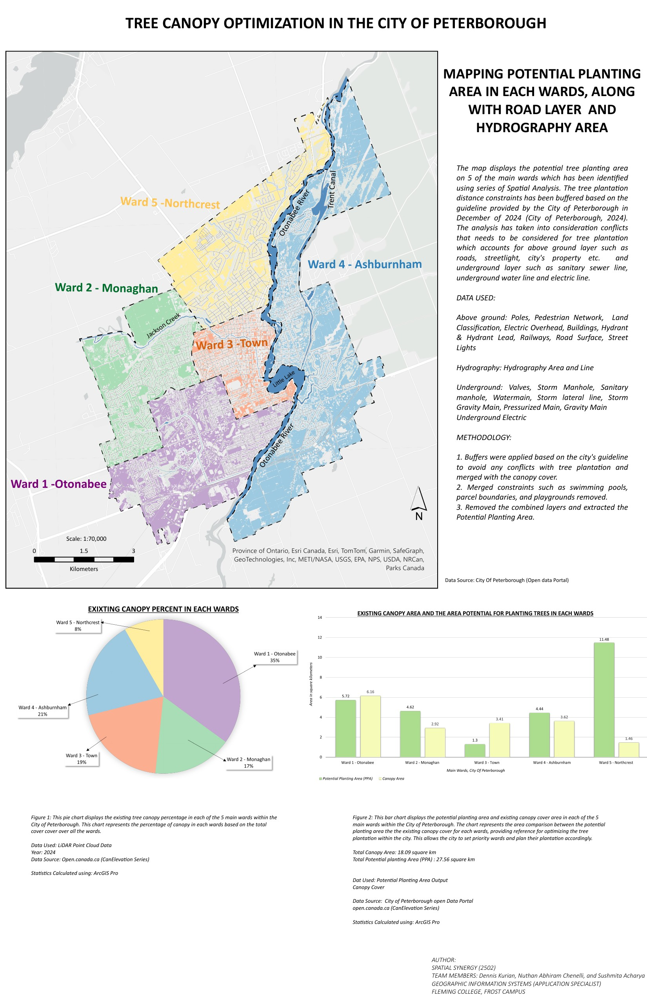
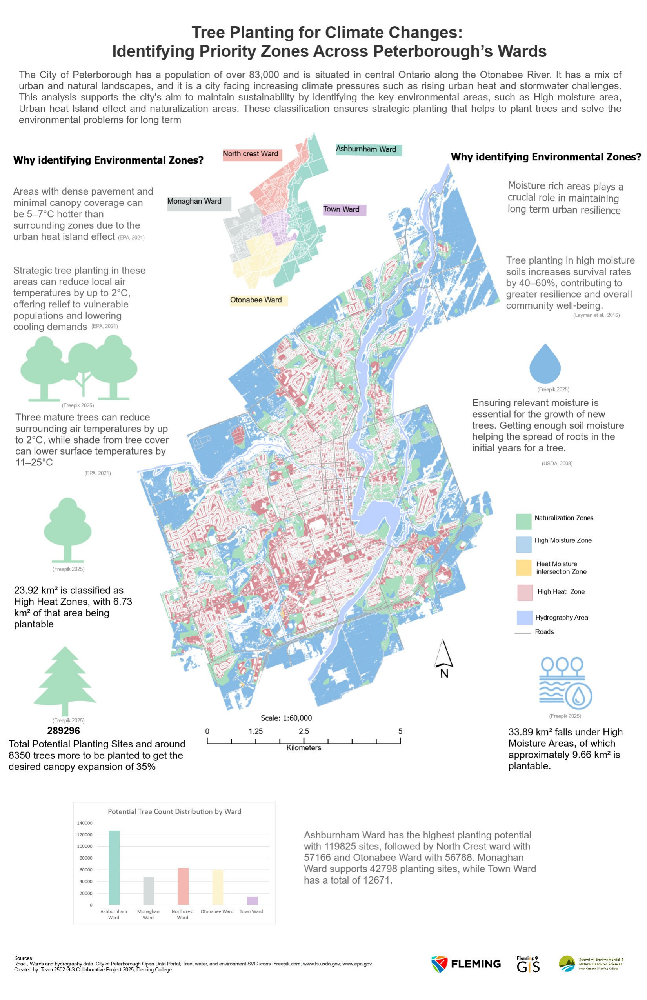
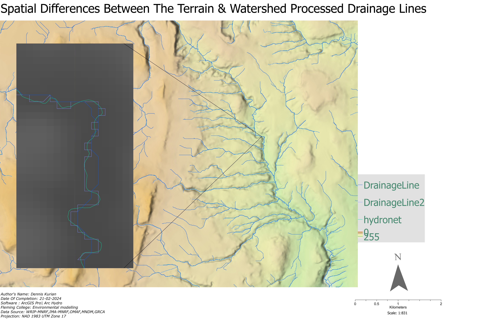
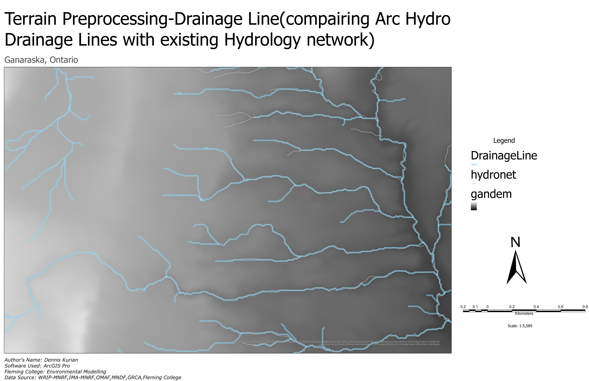
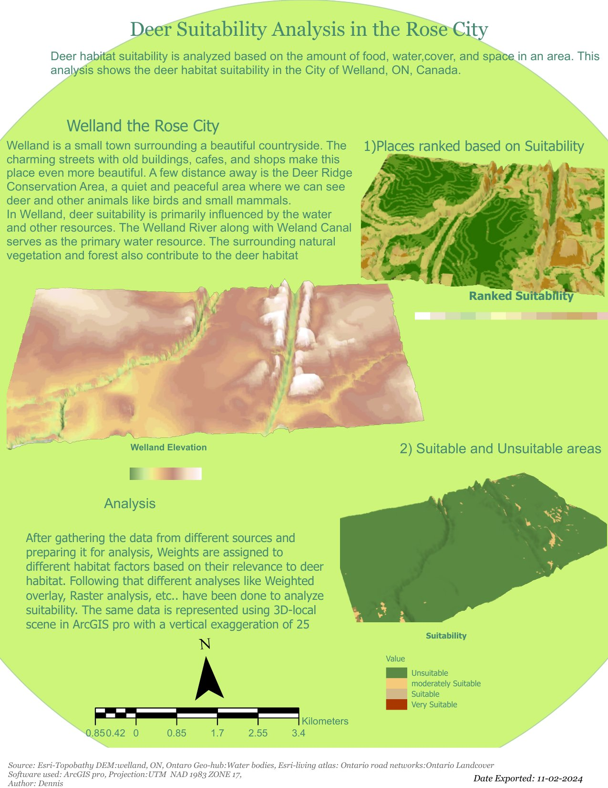

Hi, I'm Dennis Kurian
GIS Application Specialist
Post graduate diploma in GIS application specialist
Cambridge, Canada · denniskurian65@gmail.com
About
I'm a GIS specialist with a Post-Graduate Diploma from Fleming College. I have hands-on experience in spatial analysis, remote sensing, web GIS, and automation using Python and FME. My training covered everything from LiDAR processing and object-based image analysis to network analysis, regression modelling, and building interactive web applications. For my capstone, I worked on mapping potential tree planting sites across Peterborough's five wards, supporting the city's long-term urban forestry goals through a combination of LiDAR-derived canopy analysis, land surface temperature mapping, and multi-layer spatial conflict modelling. Beyond coursework, I find myself drawn to projects where spatial data can reveal patterns that aren't immediately obvious. I enjoy layering multiple methods statistical, network-based, and visual to build a fuller picture of what the data is actually saying and what it means for the people and places involved. I'm looking for roles in urban planning, environmental management, or municipal government where GIS is used to inform real decisions, and where there is room to keep learning and applying new spatial methods to complex problems.
Looking for roles in urban planning, environmental management, municipal government, or consulting where GIS informs real decisions.
- ArcGIS Pro
- ArcGIS Online
- QGIS
- PCI Catalyst
- eCognition
- ArcGIS Field Maps
- Survey 123
- Network Analysis
- OLS & GWR Regression
- Kernel Density Estimation
- Least Cost Path
- Weighted Overlay
- Geocoding & Linear Referencing
- Model Builder
- LiDAR Processing
- eCognition OBIA
- Max Likelihood Classification
- CIR Composites
- Stereo Interpretation
- DTM / DSM / CHM
- Land Surface Temperature
- Python / ArcPy
- HTML / CSS / JavaScript
- SQL / PostGIS
- Arcade Expressions
- FME Desktop
- REST API Integration
- GeoJSON
- ArcGIS Experience Builder
- ArcGIS StoryMaps
- ArcGIS Dashboards
- ArcGIS Insights
- Leaflet.js
- ArcGIS Web API
- ArcGIS Field Maps
- PostgreSQL / PostGIS
- Enterprise Geodatabase
- MS Access
- AutoCAD / Avenza MA Publisher
- Versioned Editing
- Topology & QA/QC
- Cartographic Layout
Tree Canopy Optimization — City of Peterborough
Capstone · Fleming College 2025

Potential Planting Area — 5 City Wards. Click to enlarge.

Environmental Priority Zones — Heat & Moisture Classification
27.56 km² of potential planting area was identified across all 5 city wards using LiDAR point cloud processing, Landsat 8 multispectral analysis, and multi-layer spatial conflict mapping — supporting Peterborough's goal of reaching 35% tree canopy by 2051.
Urban Noise Inequity(self exploration) — City of Toronto
Spatial Analysis · 10,586 Noise Complaints · 2023

Urban Noise Inequity — Ward-level complaint distribution infographic
Noise complaint rates in Toronto are not simply a reflection of where noise occurs — they reflect underlying patterns of inequality. Communities with higher visible minority populations file significantly fewer complaints than statistical models predict.
- Phase 01Geocoding — 99.9% match rate (823/824 complaints)
- Phase 02Linear Referencing — Dynamic segmentation along centreline
- Phase 03Network Analysis — Closest Facility + Service Areas
- Phase 04OLS Regression — R²=0.189, 3 significant variables
- Phase 05GWR — R²=0.272, Moran's I reduced 34%
- Phase 06Least Cost Path — Optimal enforcement patrol route
- Phase 07KDE — 50m cell resolution, 20km bandwidth
- Phase 08Accessibility Scoring — 158 neighbourhoods


Web GIS Applications
ArcGIS Online · Leaflet.js · Experience Builder
Interactive applications analysing the EPA National Walkability Index across US census block groups — built using the full ArcGIS Online suite and Leaflet.js.


Environmental Modelling
Terrain · Hydrology · Habitat Suitability

Terrain vs watershed-processed drainage lines over a hillshade DEM. DrainageLine, DrainageLine2 and hydronet compared at 1:831 scale — Ganaraska, Ontario.
Arc Hydro · ArcGIS Pro · NAD 1983 UTM Zone 17
Arc Hydro derived drainage lines compared against the existing hydrology network over a greyscale hillshade DEM — Ganaraska watershed, scale 1:5,589.
Arc Hydro · Terrain Preprocessing
Deer habitat suitability for the City of Welland using weighted overlay (food, water, cover, space). Visualised in a 3D local scene with 25× vertical exaggeration.
Weighted Overlay · 3D Scene · Welland, OntarioRemote Sensing & Image Analysis
LiDAR · OBIA · Multispectral · Stereo


Code & Automation
Python · ArcPy · SQL · FME · Web Deployment
Pulls paginated bird sightings from the iNaturalist API around Lindsay, Ontario and automatically pushes them to a hosted ArcGIS Online feature layer. Built for the Fleming Bird Conservation Centre (FBCC).
# Pull bird sightings from iNaturalist API
params = {
"place_id": 197006,
"iconic_taxa": "Aves",
"format": "geojson"
}
while True:
response = requests.get(base_url, params=params)
all_results.extend(data["results"])
if len(all_results) >= total_results: break
# Push to ArcGIS Online feature layer
feature_layer.manager.truncate()
feature_layer.edit_features(adds=features)Automates NDVI calculation from multispectral imagery using ArcPy Spatial Analyst. Outputs classified rasters for vegetation analysis workflows without manual band selection.
import arcpy
from arcpy.sa import *
# Calculate NDVI from multispectral bands
nir = Float(Raster("band_4"))
red = Float(Raster("band_3"))
ndvi = (nir - red) / (nir + red)
ndvi.save("output/ndvi_classified.tif")
print(f"Range: {ndvi.minimum:.3f} to {ndvi.maximum:.3f}")Public-facing web application deployed on GitHub Pages using the ArcGIS JavaScript API. Users visualise potential tree planting sites across Peterborough's 5 wards, toggle between public and private land ownership layers, and explore the analysis legend.
FME Desktop workspaces for automated spatial data transformation — format conversion (Shapefile → GeoJSON → FileGDB), CRS reprojection, attribute schema mapping, and data quality validation before loading to enterprise geodatabase. Includes automated topology checking and null value handling.
Contact
Open to GIS analyst, spatial data analyst, and junior GIS technician roles. Feel free to get in touch.